These materials have been taken from the Software Carpentry: R Novice Lesson.
You can find the original materials
here.
Plotting our data is one of the best ways to quickly explore it and the various
relationships between variables.
There are three main plotting systems in R, the base plotting
system, the
lattice package, and the
ggplot2 package.
Today we’ll be learning about the ggplot2 package, because it is the most
effective for creating publication quality graphics.
ggplot2 is built on the grammar of graphics, the idea that any plot can be
expressed from the same set of components: a data set, a coordinate
system, and a set of geoms, the visual representation of data points.
The key to understanding ggplot2 is thinking about a figure in layers. This idea
may be familiar to you if you have used image editing programs like Photoshop,
Illustrator, or Inkscape.
First, let’s make sure everything’s loaded:
# Download the packages
# install.packages(c("tidyverse", "gapminder"))
# Load the packages for use
library(tidyverse)
library(gapminder)
Simple ggplot
Let’s start off with an example:
ggplot(data = gapminder, aes(x = gdpPercap, y = lifeExp)) +
geom_point()

So the first thing we do is call the ggplot function. This function lets R
know that we’re creating a new plot, and any of the arguments we give the
ggplot function are the global options for the plot: they apply to all
layers on the plot.
We’ve passed in two arguments to ggplot. First, we tell ggplot what data we
want to show on our figure, in this example the gapminder data we read in
earlier. For the second argument we passed in the aes function, which
tells ggplot how variables in the data map to aesthetic properties of
the figure, in this case the x and y locations. Here we told ggplot we
want to plot the “gdpPercap” column of the gapminder data frame on the x-axis, and
the “lifeExp” column on the y-axis.
By itself, the call to ggplot isn’t enough to draw a figure:
ggplot(data = gapminder, aes(x = gdpPercap, y = lifeExp))
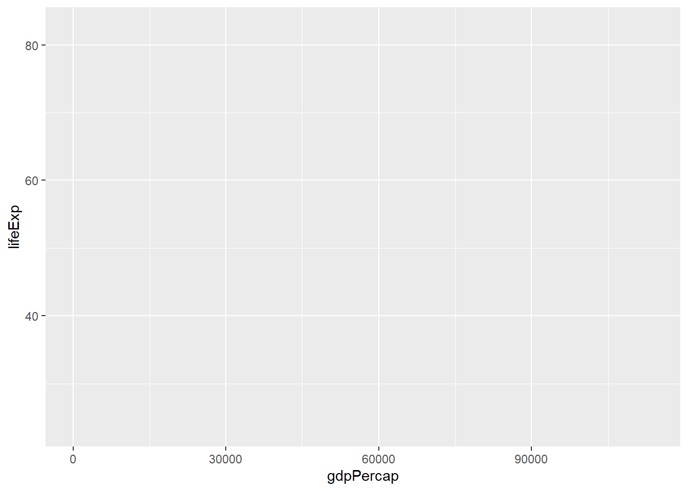
We need to tell ggplot how we want to visually represent the data, which we
do by adding a new geom layer. In our example, we used geom_point, which
tells ggplot we want to visually represent the relationship between x and
y as a scatterplot of points:
ggplot(data = gapminder, aes(x = gdpPercap, y = lifeExp)) +
geom_point()

Challenge 1
Modify the example so that the figure shows how life expectancy has
changed over time:
# Previous example:
ggplot(data = gapminder, aes(x = gdpPercap, y = lifeExp)) +
geom_point()
Hint: the gapminder dataset has a column called “year”, which should appear
on the x-axis.
Solution to Challenge 1
Here is one possible solution:
ggplot(data = gapminder, aes(x = year, y = lifeExp)) +
geom_point()
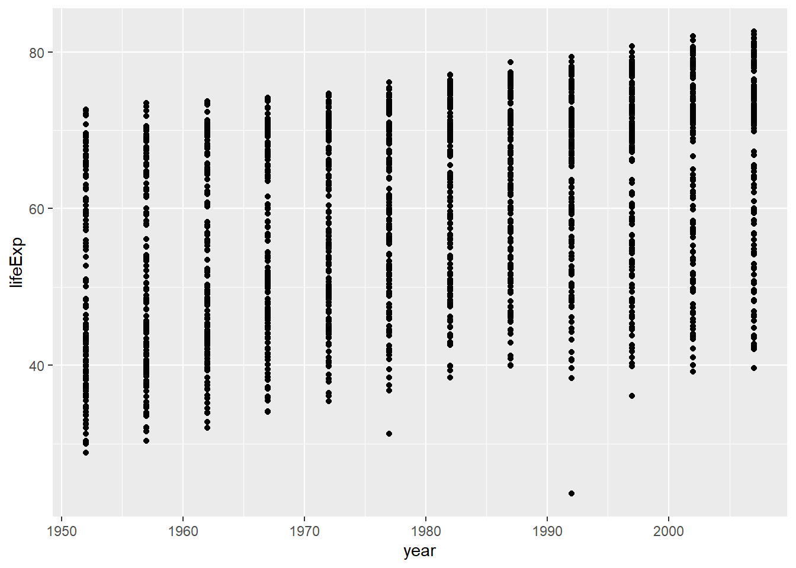
Challenge 2
In the previous examples and challenge we’ve used the aes function to tell
the scatterplot geom about the x and y locations of each point.
Another aesthetic property we can modify is the point colour. Modify the
code from the previous challenge to colour the points by the “continent”
column. What trends do you see in the data? Are they what you expected?
Solution to Challenge 2
ggplot(data = gapminder, aes(x = year, y = lifeExp, colour = continent)) +
geom_point()
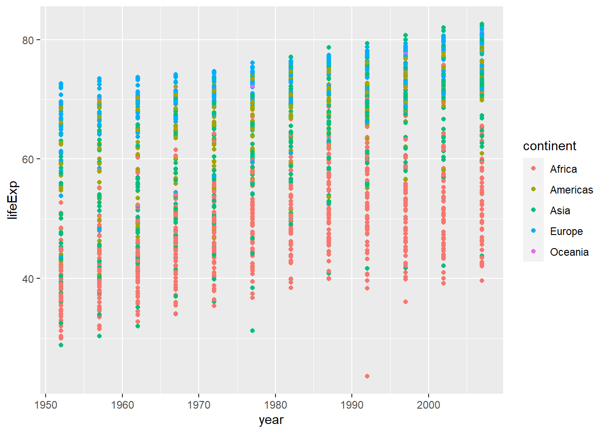
Layers
Using a scatterplot probably isn’t the best for visualizing change over time.
Instead, let’s tell ggplot to visualize the data as a line plot. Here we’ll
also shorten our code by omitting some of the declarations (e.g. x = year). By
default, the first object passed to ggplot() is assumed to be the data
argument. Similarly, the first two column names of aes() are assumed to be the
x and y arguments.
ggplot(gapminder, aes(year, lifeExp, by = country, colour = continent)) +
geom_line()
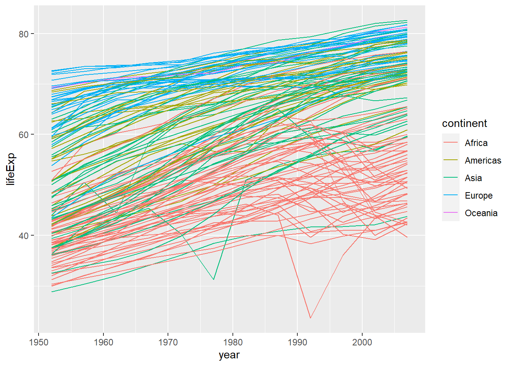
Instead of adding a geom_point layer, we’ve added a geom_line layer. We’ve
added the by aesthetic, which tells ggplot to draw a line for each
country.
But what if we want to visualize both lines and points on the plot? We can
simply add another layer to the plot:
ggplot(gapminder, aes(year, lifeExp, by = country, colour = continent)) +
geom_line() +
geom_point()
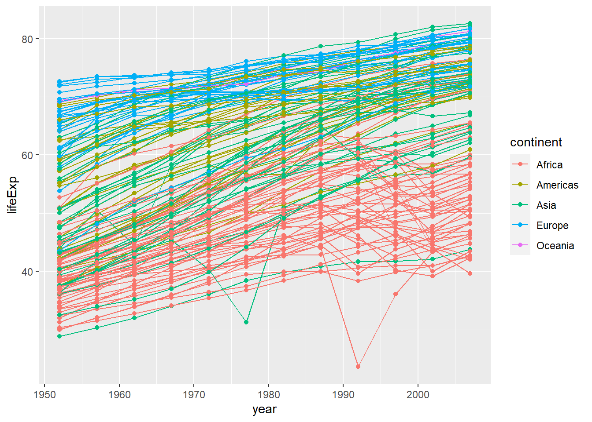
It’s important to note that each layer is drawn on top of the previous layer. In
this example, the points have been drawn on top of the lines. Here’s a
demonstration:
ggplot(gapminder, aes(year, lifeExp, by = country)) +
geom_line(aes(colour = continent)) +
geom_point()
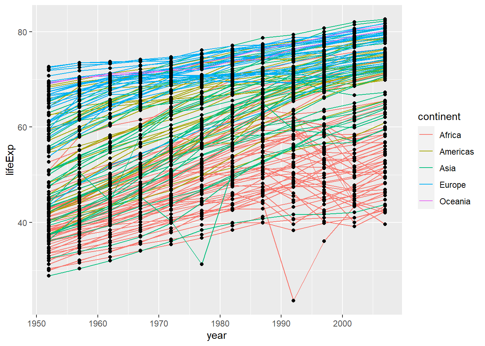
In this example, the aesthetic mapping of colour has been moved from the
global plot options in ggplot to the geom_line layer so it no longer applies
to the points. Now we can clearly see that the points are drawn on top of the
lines.
Tip: Setting an aesthetic to a value instead of a mapping
So far, we’ve seen how to use an aesthetic (such as colour) as a mapping to
a variable in the data. For example, when we use geom_line(aes(colour = continent)), ggplot will give a different colour to each continent. But what if
we want to change the colour of all lines to blue? You may think that
geom_line(aes(colour = "blue")) should work, but it doesn’t. Since we don’t
want to create a mapping to a specific variable, we simply move the colour
specification outside of the aes() function, like this: geom_line(colour = "blue").
Challenge 3
Switch the order of the point and line layers from the previous example. What
happened?
Solution to Challenge 3
Switch the order of the point and line layers from the previous example. What
happened?
ggplot(gapminder, aes(year, lifeExp, by = country)) +
geom_point() +
geom_line(aes(colour = continent))
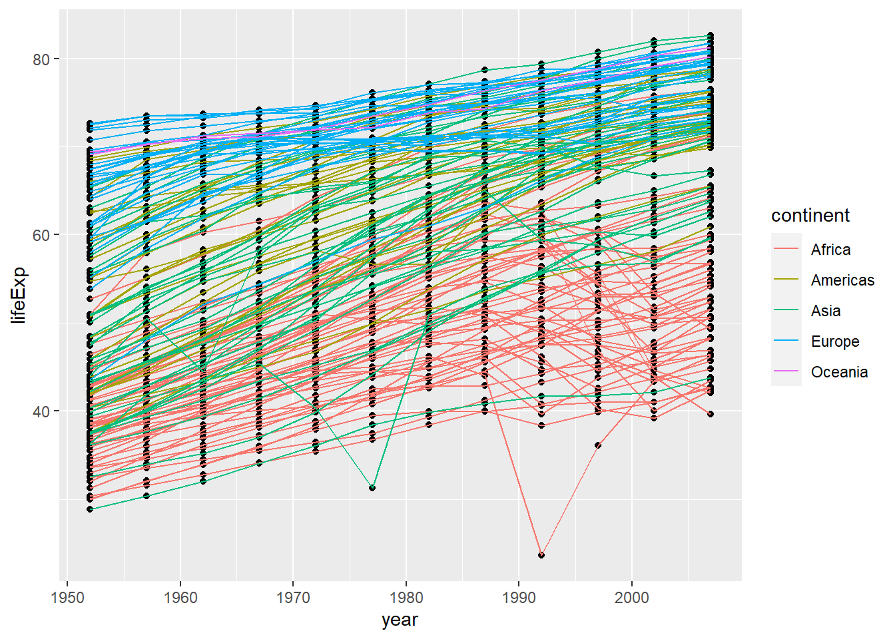
The lines now get drawn over the points!
Transformations and statistics
ggplot2 also makes it easy to overlay statistical models over the data. To
demonstrate we’ll go back to our first example:
ggplot(gapminder, aes(gdpPercap, lifeExp, colour = continent)) +
geom_point()

Currently it’s hard to see the relationship between the points due to some strong
outliers in GDP per capita. We can change the scale of units on the x axis using
the scale functions. These control the mapping between the data values and
visual values of an aesthetic. We can also modify the transparency of the
points, using the alpha function, which is especially helpful when you have
a large amount of data which is very clustered.
ggplot(gapminder, aes(gdpPercap, lifeExp)) +
geom_point(alpha = 0.5) +
scale_x_log10()

The log10 function applied a transformation to the values of the gdpPercap
column before rendering them on the plot, so that each multiple of 10 now only
corresponds to an increase in 1 on the transformed scale, e.g. a GDP per capita
of 1,000 is now 3 on the y axis, a value of 10,000 corresponds to 4 on the y
axis and so on. This makes it easier to visualize the spread of data on the
x-axis.
Reminder: Setting an aesthetic to a value instead of a mapping
Notice that we used geom_point(alpha = 0.5). As the previous tip mentioned, using a setting outside of the aes() function will cause this value to be used for all points, which is what we want in this case. But just like any other aesthetic setting, alpha can also be mapped to a variable in the data. For example, we can give a different transparency to each continent with geom_point(aes(alpha = continent)).
We can fit a simple relationship to the data by adding another layer,
geom_smooth:
ggplot(gapminder, aes(gdpPercap, lifeExp)) +
geom_point() +
scale_x_log10() +
geom_smooth(method = "lm")
We can make the line thicker by setting the size aesthetic in the
geom_smooth layer:
ggplot(gapminder, aes(gdpPercap, lifeExp)) +
geom_point() +
scale_x_log10() +
geom_smooth(method = "lm", size = 1.5)
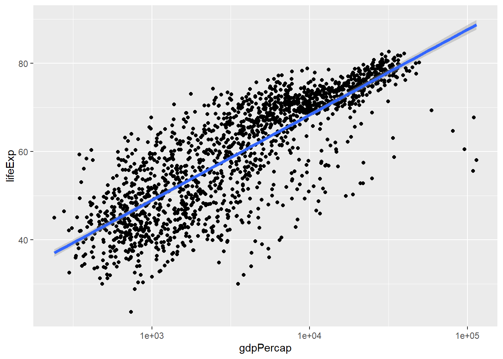
There are two ways an aesthetic can be specified. Here we set the size
aesthetic by passing it as an argument to geom_smooth. Previously in the
lesson we’ve used the aes function to define a mapping between data
variables and their visual representation.
Challenge 4a
Modify the colour and size of the points on the point layer in the previous
example. Hint: do not use the aes function.
Solution to challenge 4a
ggplot(gapminder, aes(gdpPercap, lifeExp)) +
geom_point(size = 3, colour = "orange") +
scale_x_log10() +
geom_smooth(method = "lm", size = 1.5)
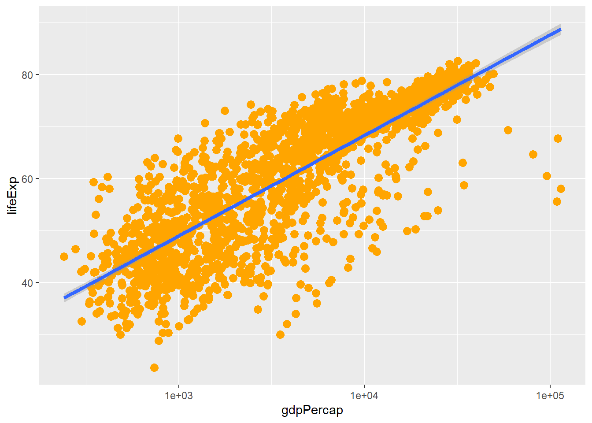
Challenge 4b
Modify your solution to Challenge 4a so that the
points are now a different shape and are coloured by continent with new
trendlines. Hint: The colour argument can be used inside the aesthetic.
Solution to Challenge 4b
Modify Challenge 4 so that the points are now a different shape and are
coloured by continent with new trendlines.
Hint: The colour argument can be used inside the aesthetic.
ggplot(gapminder, aes(gdpPercap, lifeExp, colour = continent)) +
geom_point(size = 2, alpha = 0.5) +
scale_x_log10() +
geom_smooth(method = "lm", size = 1.5)
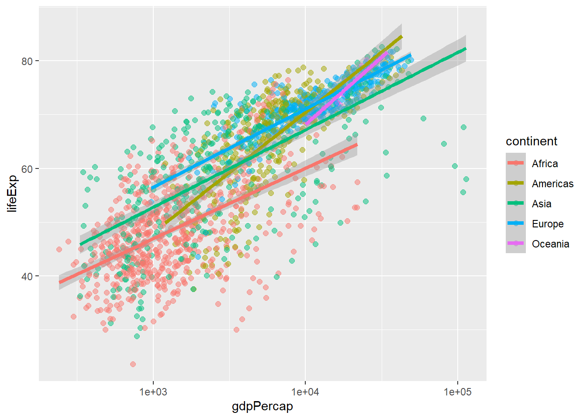
Modifying text
To clean this figure up for a publication we need to change some of the text
elements. The x-axis is too cluttered, and the y axis should read “Life
expectancy”, rather than the column name in the data frame.
We can do this by adding a couple of different layers. The theme layer
controls the axis text, and overall text size. Labels for the axes, plot title
and any legend can be set using the labs function. Legend titles are set using
the same names we used in the aes specification. Thus below the colour legend
title is set using colour = "Continent", while the title of a fill legend
would be set using fill = "MyTitle".
gapminder_small <- gapminder %>%
filter(country %in% c("Canada", "United States", "France", "Australia"))
ggplot(gapminder_small, aes(year, lifeExp, colour = continent)) +
geom_line() +
facet_wrap(~country) +
labs(x = "Year", y = "Life expectancy", title = "Figure 1", colour = "Continent") +
theme_bw() +
theme(axis.text.x = element_blank(), axis.ticks.x = element_blank())
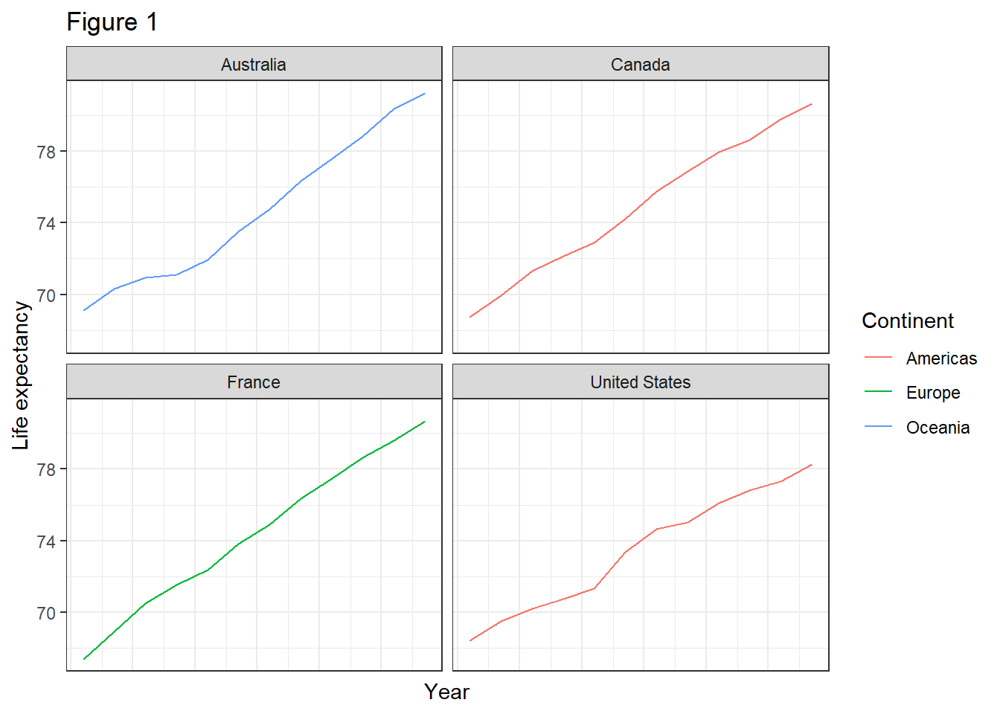
Exporting the plot
The ggsave() function allows you to export a plot created with ggplot. You can
specify the dimension and resolution of your plot by adjusting the appropriate
arguments (width, height and dpi) to create high quality graphics for
publication. In order to save the plot from above, we first assign it to a
variable lifeExp_plot, then tell ggsave to save that plot in png format to
a directory called results. (Make sure you have a results/ folder in your
working directory.)
lifeExp_plot <- ggplot(gapminder_small, aes(year, lifeExp, colour = continent)) +
geom_line() +
facet_wrap(~country) +
labs(x = "Year", y = "Life expectancy", title = "Figure 1", colour = "Continent") +
theme_bw() +
theme(axis.text.x = element_blank(), axis.ticks.x = element_blank())
ggsave(plot = lifeExp_plot, filename = "lifeExp.png", units = "cm", width = 12, height = 10, dpi = 300)
There are two nice things about ggsave. First, it defaults to the last plot,
so if you omit the plot argument it will automatically save the last plot you
created with ggplot. Secondly, it tries to determine the format you want to
save your plot in from the file extension you provide for the filename (for
example .png or .pdf). If you need to, you can specify the format explicitly
in the device argument.
Summary
This is a taste of what you can do with ggplot2. RStudio provides a really
useful cheat sheet
of the different layers available, and more extensive documentation is available
on the ggplot2 website. Finally, if you have
no idea how to change something, a quick Google search will usually send you to
a relevant question and answer on Stack Overflow with reusable code to modify!
Challenge 5
Create a density plot of GDP per capita, filled by continent.
Advanced:
- Transform the x axis to better visualise the data spread
- Add a facet layer to panel the density plots by year
- Make the y-axis range independent for each facet (year)
Solution to Challenge 5
ggplot(gapminder, aes(gdpPercap, fill = continent)) +
geom_density(alpha = 0.6) +
facet_wrap(~year, scales = "free_y") +
scale_x_log10()
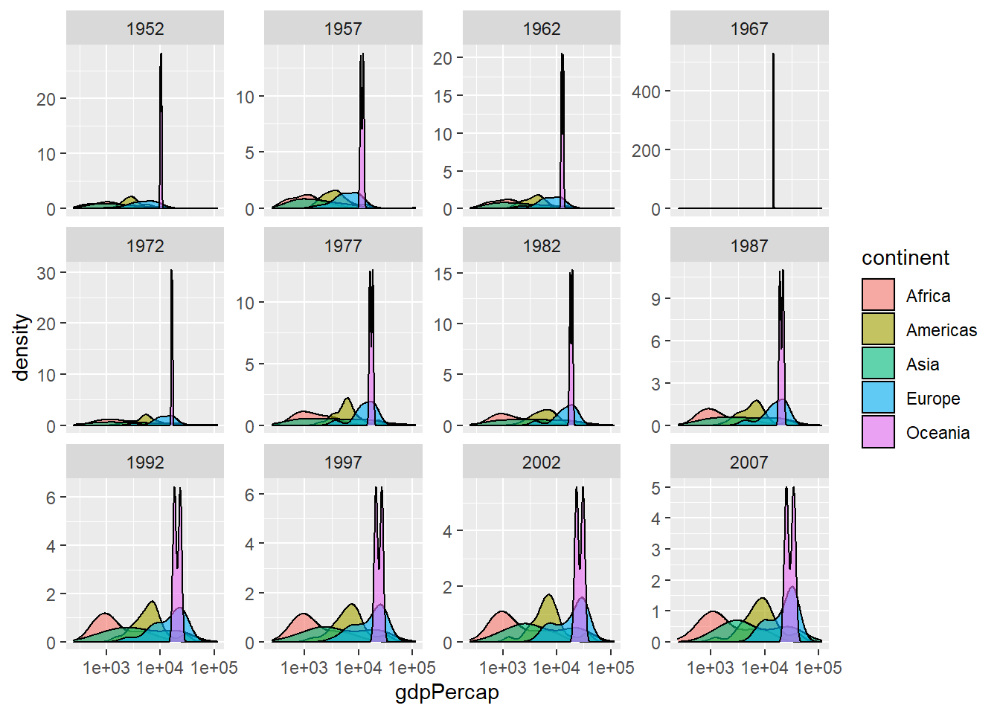
Making Heatmaps with corrplot
While there is a lot that ggplot2 can do, one limitation is in the construction
of heatmaps, another common type of visualiztion in many disciplines of science.
Let’s start by installing, then loading it into RStudio.
# install.packages("corrplot")
library(corrplot)
Great! Now we’ll use the mtcars data set included in R to try out different heatmaps.
# Quick look at mtcars.
head(mtcars)
mpg cyl disp hp drat wt qsec vs am gear carb
Mazda RX4 21.0 6 160 110 3.90 2.620 16.46 0 1 4 4
Mazda RX4 Wag 21.0 6 160 110 3.90 2.875 17.02 0 1 4 4
Datsun 710 22.8 4 108 93 3.85 2.320 18.61 1 1 4 1
Hornet 4 Drive 21.4 6 258 110 3.08 3.215 19.44 1 0 3 1
Hornet Sportabout 18.7 8 360 175 3.15 3.440 17.02 0 0 3 2
Valiant 18.1 6 225 105 2.76 3.460 20.22 1 0 3 1
# Pearson correlation is default. See ?cor for other available methods
cor_mtcars <- cor(mtcars)
head(cor_mtcars)
mpg cyl disp hp drat wt
mpg 1.0000000 -0.8521620 -0.8475514 -0.7761684 0.6811719 -0.8676594
cyl -0.8521620 1.0000000 0.9020329 0.8324475 -0.6999381 0.7824958
disp -0.8475514 0.9020329 1.0000000 0.7909486 -0.7102139 0.8879799
hp -0.7761684 0.8324475 0.7909486 1.0000000 -0.4487591 0.6587479
drat 0.6811719 -0.6999381 -0.7102139 -0.4487591 1.0000000 -0.7124406
wt -0.8676594 0.7824958 0.8879799 0.6587479 -0.7124406 1.0000000
qsec vs am gear carb
mpg 0.41868403 0.6640389 0.5998324 0.4802848 -0.5509251
cyl -0.59124207 -0.8108118 -0.5226070 -0.4926866 0.5269883
disp -0.43369788 -0.7104159 -0.5912270 -0.5555692 0.3949769
hp -0.70822339 -0.7230967 -0.2432043 -0.1257043 0.7498125
drat 0.09120476 0.4402785 0.7127111 0.6996101 -0.0907898
wt -0.17471588 -0.5549157 -0.6924953 -0.5832870 0.4276059
# Plot heatmap
corrplot(cor_mtcars, method = "circle")
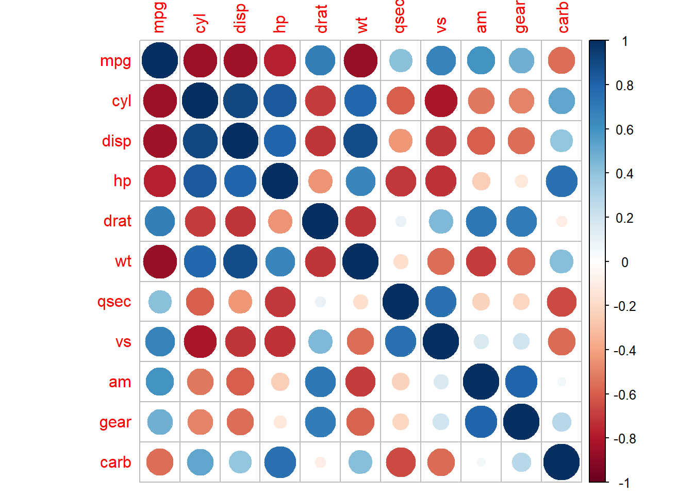
In this heat map both size and colour corresponds to the Pearson coefficient.
There are also other correlative measures we can explore:
corrplot(cor_mtcars, method = "square")
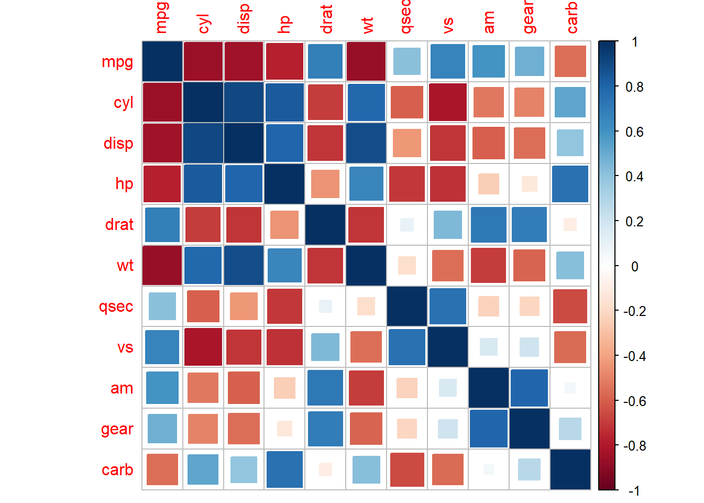
corrplot(cor_mtcars, method = "number")
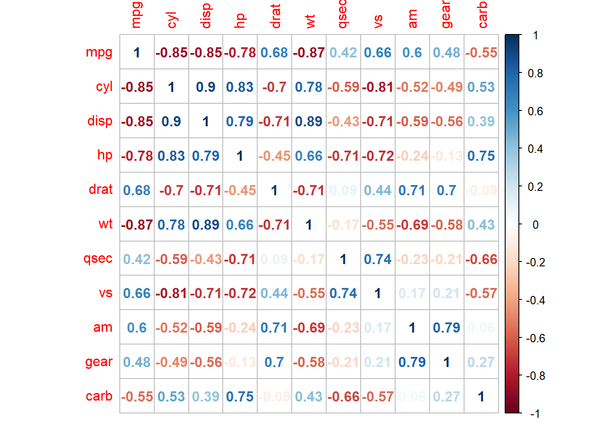
Heat maps are redundant, with the top-right and bottom-left portions of the plot
being the same. We can eliminate this by taking a slice of the map:
corrplot(cor_mtcars, type = "upper")
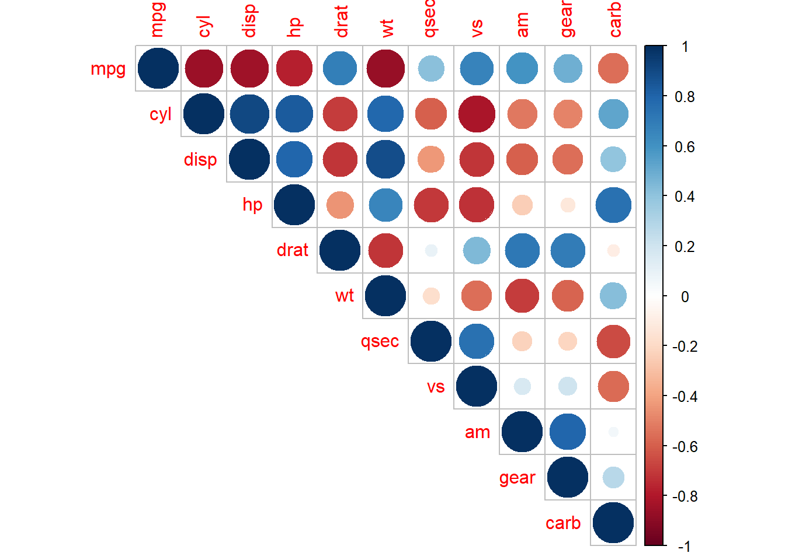
corrplot(cor_mtcars, type = "lower")
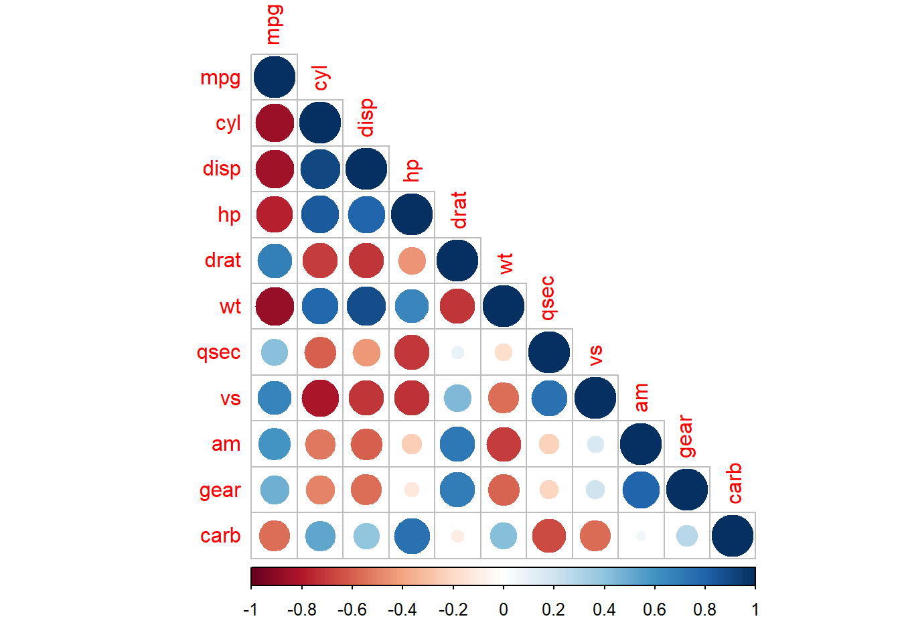
We can also mix together shapes and numbers (or any two combinations of methods)
to increase the amount of information we can represent in a heat map.
corrplot.mixed(cor_mtcars, lower = "number", upper = "circle")
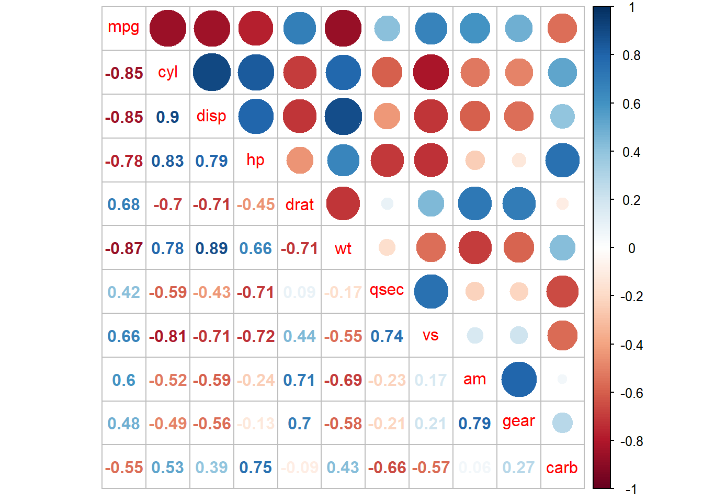
The correlation matrix can be reordered according to the correlation
coefficient. This is important to identify the hidden structure and pattern in
the matrix. There are multiple methods available for clustering, but we will
only use the k-means hierarchical clustering method here:
corrplot(cor_mtcars, order = "hclust")
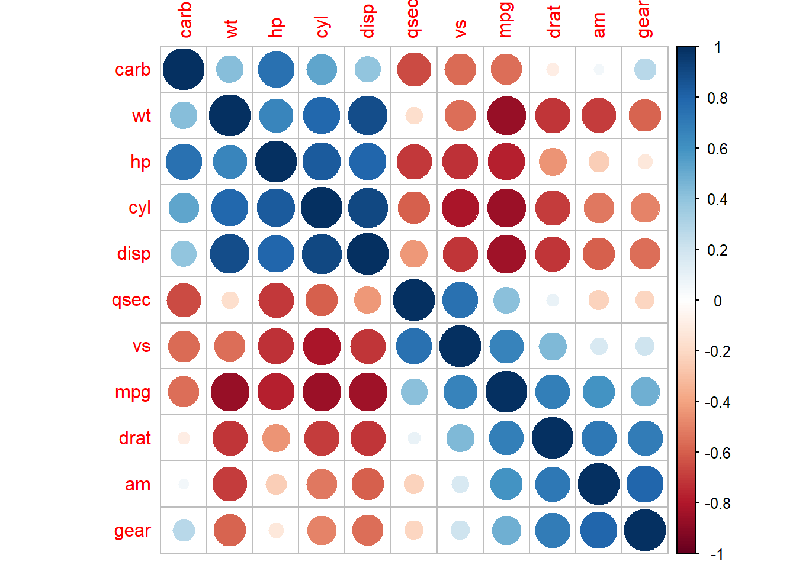
We can also direct corrplot to identify the two distinct groups we can see by
eye.
corrplot(cor_mtcars, order = "hclust", addrect = 2)
And also groups that might not be immediately clear to us.
corrplot(cor_mtcars, order = "hclust", addrect = 3)
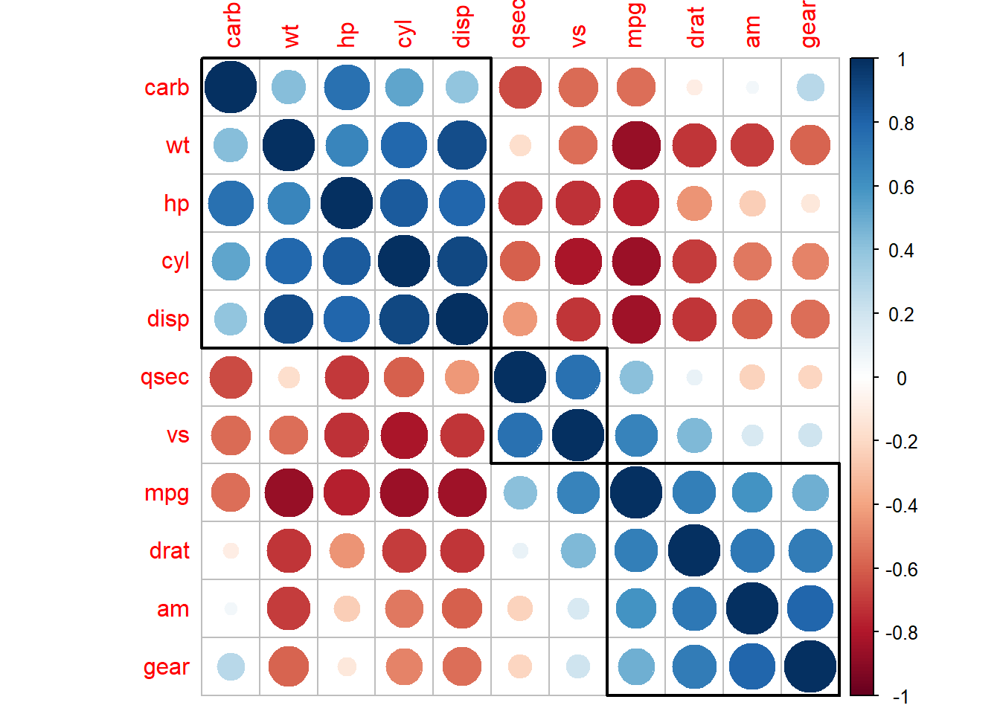